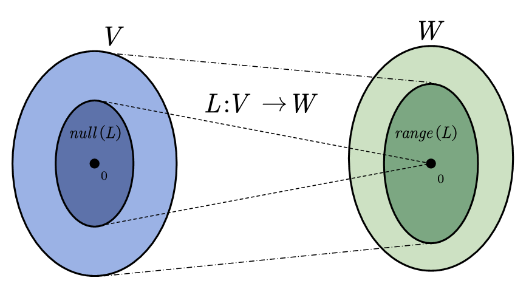

Note02 线性映射¶
本笔记完全参考《Linear Algebra Done Right》，所有记录的相关知识以及总结思考均来自该书的启发。本笔记只是面向个人作为深入学习理解线性代数的垫脚石，解释性质不高，而且没有例子，但是高度凝练，适合复习的时候审阅核对梳理主干。
- 个人认为线性代数分为3部分：矩阵论、向量空间论、算子论，目前本笔记章节位于向量空间论。注意，本部分并不会重视矩阵的理解，同时我们会省略取矩阵乘法的理解，矩阵的秩。后续我们会在矩阵论部分详细说明
- 本笔记覆盖的范围 - 3.A ～ 3.D（参考第三版：《Linear Algebra Done Right，3E》）
我假设你已经有一定高等数学基础，我列出我略去的概念：
| 线性映射的定义 | 单射、满射 | 线性组合 | 矩阵的加法、标量乘法 | 可逆、逆 |
|---|---|---|---|---|
PART1 线性映射与向量空间¶
为什么我们能够把线性映射抽象出向量空间这个概念
这个问题，换言之：“为什么\(L(V,W)\)上有许多的线性映射？” 我们考察一个简单的例子\(L(V,V)\)： 这个向量空间的含义是，我们考量V这个空间自己映射到自己的一些线性映射，我们很容易想到有恒等映射\((I)\)，平移映射等。 还有一个比较简单的案例\(L(P(R),P(R))\)： 基于多项式上的线性映射，我们也很容易想到：乘以\(x^2\)、微分映射等
\(L(V,W)\)¶
我们设\(S,T \in L(V,W),\lambda \in F，\forall v \in V\)，给出线性映射之间的基本运算：加法、标量乘法:
- 加\((S+T)(v) = Sv +Tv\)
- 标量乘法\((\lambda T)(v) = \lambda (Tv)\)
基于上面定义的加法和标量乘法，我们可以证明\(L(V,W)\)是向量空间
其实不难理解，线性映射是一种函数，那么函数我们很容易联想到复合函数。类似地，我们于是在线性映射空间中定义乘积（product of linear maps）：
- 若\(T \in L(U,V),S \in L(V,W),ST \in L(U,W): \forall u \in U,(ST)(u) = S(Tu)\)
我们通过类比能够得到乘积的代数性质：
- 结合性 \((T_1T_2)T_3 = T_1(T_2T_3)\)
- 单位元 \(TI_V = I_WT = T\)
- 左右分配性质 \((S_1+S_2)T = S_1T+S_2T,S(T_1+T_2) = ST_1+ST_2\)
线性映射向量空间上的一些二级结论
我们不加严格证明地给出一些结论，完整严格证明推荐读者自行完成： + V的子空间上的线性映射可以扩张成V上的线性映射 显然，我们可以通过之前在Note01中的结论（V子空间上的一组基可以扩展成为V上的一组基） + 线性映射如何判等/不等 等价于 函数判等/不等 参考书中的P46，3.A 14
\(Null(T)、Range(T)\)¶
在本节讨论之前，我们通过函数理解下我们为什么引入这个零空间、象空间；我们考虑函数映射的一般性质时，我们会首先考虑函数映射的单射性、满射性，而你参考下高等数学中对这两个东西的描述，你会发现我们在线性代数中也就是从空间的范畴上给出具体的界定。

- 关于线性映射的单射性（单性、injective）等价于零空间为{0}
我们给出零空间的定义、单射性的定义就不证自明了： \(\(null\; T = \{v\in V:Tv = 0 \}\)\)
- 关于线性映射的满射性（线性映射的值域是象空间 - W的子空间）
我们给出象空间的定义、满射的定义，同样不证自明： \(\(range\; T = \{Tv:v\in V\}\)\)
至此，我们可以得到线性映射基本定理(\(V,rangeT\)是有限维)：
对基本定理一个科学通俗的解释
我们设\(v_1,v_2,...,v_n \in V\)是\(V\)的一组基 无论是什么线性映射（理解成函数），都会有部分基被压缩成0，其他的是正常非0值 那么我们不妨假设\(\forall v_i:1 \le i\le n \le m\) 有\(Tv_i = 0\),而其他的基经过\(T\)不为0. 现在，\(V\)中的基被分为了两个部分，前面的\(v_i\)张成了零空间。 后面的基经过\(T\)后显然是象空间的基（书3A：3.5） 从维度上就可以得到上面的结果。 + 你可能有这样的疑问，为什么用0来划分？ 0在向量空间很特殊，你会发现，V的所有子空间的交就是{0}
于是我们有如下重要推论：
- 到更小维度的向量空间的线性映射不是单的
- 到更大维数向量空间的线性映射不是满的
PART2 具象化的线性映射¶
线性映射表示线性方程组¶
我们尝试使用线性映射对齐次线性方程组进行描述，定义\(T:\mathbf{F}^n \rightarrow \mathbf{F}^m\)：
上述方程是含有\(n\)个变量\(x_1,...,x_n\)和\(m\)个方程的齐次线性方程组，与此相对应的事\(T:\mathbf{F}^n \rightarrow \mathbf{F}^m\),上面一个小节最后一个结论，到更小维度的向量空间的线性映射不是单的。所以当\(n>m\),也即是说当变量多于方程时，齐次线性方程组必有非零解。
以同样的方式我们可以考虑非齐次线性方程组，但是我们要考虑的问题是：
现在是否存在某些常数\(c_1,...,c_k\in \mathbf{F}\)使得上述方程组无解。
方程(2)与方程组(1)是一样的。问题其实等价于是否在\(\mathbf{F}^m\)中是否是满的，如果不是满的，说明有一组\((c_1,...,c_m)\)使得上面方程(1)不成立。由于上面一个小节最后一个结论，到更大维度的向量空间的线性映射不是满的。所以当\(n<m\),也即是说当方程多于变量时，必有一组常数项式的相应的非齐次线性方程组无解。
线性映射的矩阵¶
设\(T \in L(V,W)\)，并设\(v_1,...,v_n\)是\(V\)的基，\(w_1,...,w_m\)是\(W\)的基。规定\(T\)关于这些基的矩阵为\(m \times n\)矩阵\(M(T)\)，其中\(A_{j,k}\)满足：

我们给出线性映射矩阵的运算性质：
- \(S,T \in L(V,W),M(S+T) = M(S)+M(T)\)
- \(\lambda \in \mathbf{F},T \in L(V,W):M(\lambda T) = \lambda M(T)\)
- \(T \in L(U,V),S\in L(V,W):M(ST) = M(S)M(T)\)
我们发现这个线性映射矩阵很类似我们第一次接触的矩阵，在此我们给出所有\(m \times n\)矩阵的集合，记做\(\mathbf{F}^{m,n}\)
按照上面定义的矩阵的加法和标量乘法，我们容易证明知道，\(\mathbf{F}^{m,n}\)是一个向量空间。而这个向量空间的维数：
- 将线性映射视为矩阵乘法
我将用两个观点来说明这个事情，此点需要结合下面PART03部分的不同线性映射的同构。
- 线性映射的作用十分类似矩阵乘法
我们已经定义了关于线性映射的矩阵\(M(T)\)，现在我们定义向量的矩阵\(M(v)\),设\(v\in V\)，设\(v_1,...,v_n\)是 \(V\) 的基。那么\(M(v)\)：
这里\(c_1,...,c_n\)是使得下面式子成立的标量:
根据上面的定义，我们能得到一个很重要的定理「\(M(T)\)的第k列等于\(M(Tv_k)\)」：
综上所述，我们有：
上述结论说明了一件事情，如果我们可以把问题化成我们熟悉的矩阵，然后我们便可以从矩阵的角度给出线性映射的内容。也即是线性映射的作用类似于矩阵乘
- \(L(V,W) \cong F^{m,n}\)
我们其实很容易得到两个空间的存在的一个自然同构\(M\)，\(M\)就是之前定义在线性映射的矩阵、向量矩阵中的\(M\)。于是我们知道线性映射的矩阵空间和线性映射空间是同构的。
P.s \(dim\;L(V,W) = (dim\;V)(dim\;W)\)
PART3 不同的线性映射¶
本模块着重介绍两种映射：同构、算子（简单介绍）
可逆 - 同构映射¶
我们在声明部分虽然说了忽略线性映射的可逆和逆，但是我们还是给出比较重的事情：
- 可逆性等价于单性和慢性
- 可逆的线性映射有唯一的基
我们在可逆的基础上引入同构。可逆性预示着两个向量空间之间存在一一对应的关系，就像笛卡尔坐标系和几何图形其实是本质一样，在线性代数中，我们刻画出了元素的名字之外本质上相同的两个向量空间为同构的
-
当两个向量空间存在一个同构（也就是可逆映射），则两个向量空间是同构的
-
\(\mathbf{F}\)上两个有限维向量空间同构当且仅当维数相同
自身映射 - 算子¶
向量空间到滋生的线性映射十分重要，这个重要性会在算子论的讲解中逐渐明了。我们称，向量空间到自身的线性映射是算子。同时记\(L(V)\)表示\(V\)上全体算子所组成的集合。
算子的优美性质
存在有限维的情况，单性等价于满性 设V是有限维，并且设\(T \in L(V)\)，则下列称述等价： （a）T是可逆的（b）T是单的（c）T是满的
最后的最后，我想提醒一下读者，在使用上述定理时候，请注意是否是在有限维的情况下